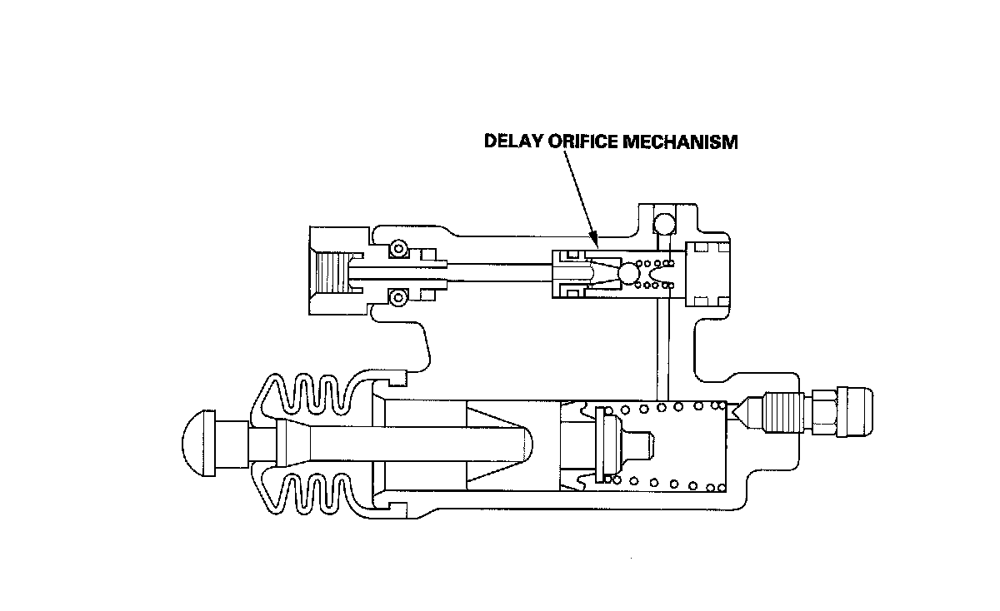
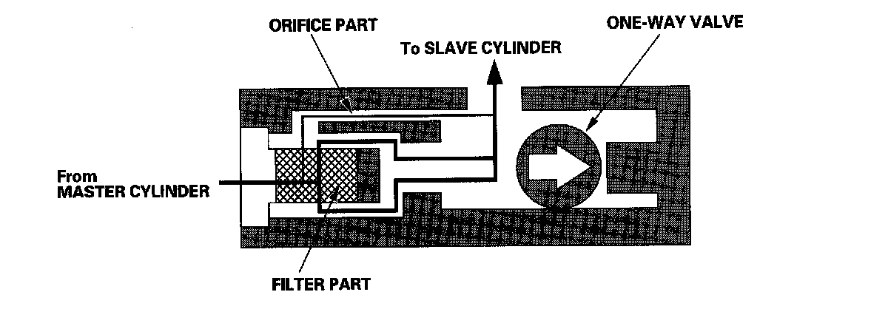
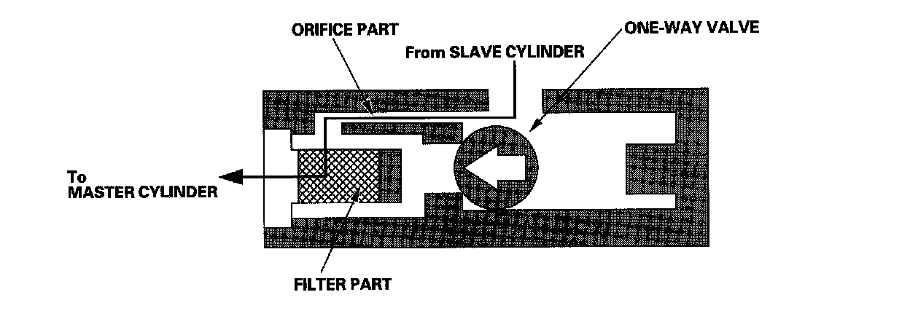

Clutch: Description and Operation
System Description6-speed Model
Delay Orifice Mechanism
Function
The delay orifice mechanism improves clutch operation by delaying the slave cylinder release speed when the clutch pedal is suddenly released. The delay orifice mechanism is built into the slave cylinder.

Operation
When the clutch pedal is pressed, the fluid pressure from the master cylinder moves the one-way valve in the direction shown in the illustration. The fluid flows through two passages: the orifice part and the filter part. It then flows out to the slave cylinder to release the pressure plate and clutch disc joint.

When the clutch pedal is released, the fluid pressure from the slave cylinder moves the one-way valve in the direction shown in the illustration. The one-way valve blocks the filter-part passage and delays the clutch release speed by returning the fluid to the master cylinder through only the orifice-part passage.
